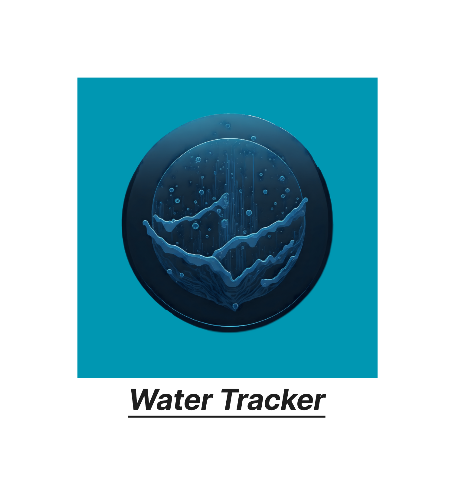
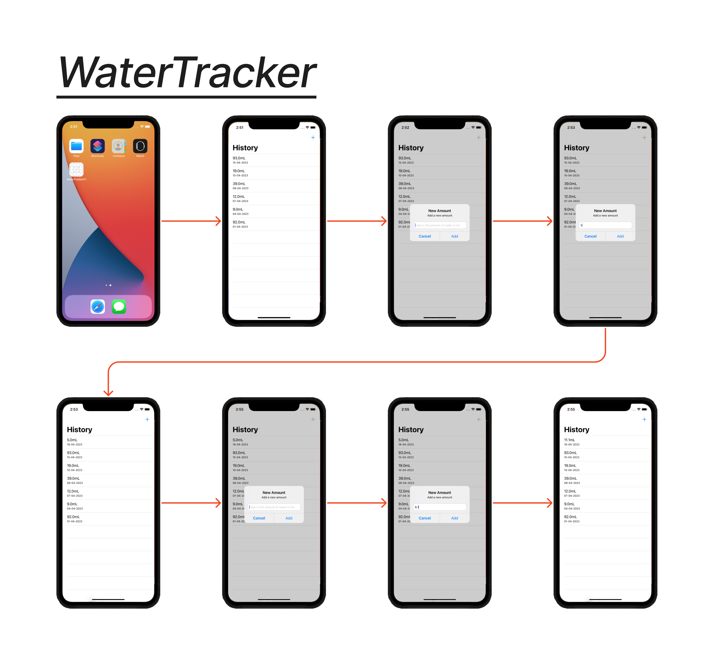
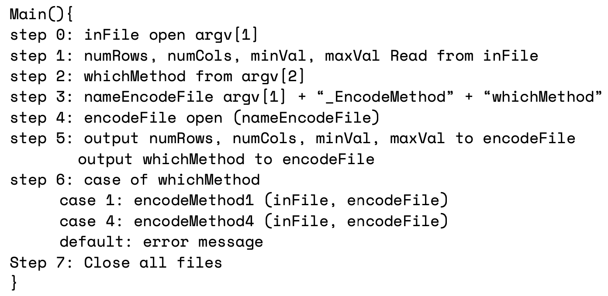
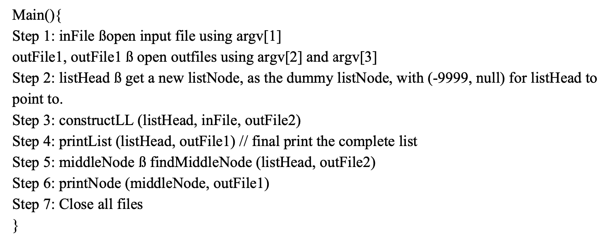
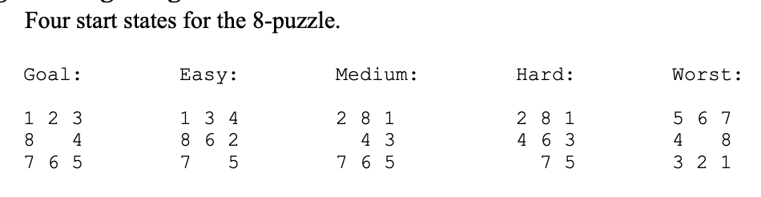

WaterTracker App
A iPhone mobile application that enables users to track their daily water intake and receive reminders to drink water throughout the day.
This project required me to design the user interface, implement the backend, and ensure the data storage and retrieval functioned correctly.
- The Features from Version 1.
- Implmenting a Reminder function to drink water.
Language: Swift
Learn more

WaterTracker App Version 1
A iPhone mobile application that enables users to track their daily water intake.
- See the History of water intake.
- Add a new enty each new day.
- Update the ammount when drinking more throughout the day.
- Checks if the User input is a number.
Language: Swift
Learn more

Run-Length Encode
Takes an image of data and returns the row, col, num, and amount repeated.
Has two methods, one without overlapping with the next line while the other method overlaps and skips zeros.
Language: C++
Learn more

LLMiddleNode
Takes a linked list and finds and prints the middle node.
If there are two middle nodes(even list), return the second middle node.
Language: C++
Learn more

Caesar-Cipher
The Caesar cipher is a type of substitution cipher in which each letter will be shifted by a certain number of places down the alphabet.
This website will be able to let the user to input text in a text box and choose to either encrypt or decrypt from 0<26, and return in all captials.
Language: HTML, CSS, JavaScript
Learn more

Heuristic Search
Using a Heuristic Search to slove the 8-Puzzle from 4 different start states.
Uses 4 different search algorithms:
- A* search using the heuristic function f*(n) = g(n) + h*(n), where h*(n) is the number of tiles out of place (not counting the blank).
- A* search using the Manhattan heuristic function.
- Iterative deepening A* with the Manhattan heuristic function.
- Depth-first Branch and Bound with the Manhattan heuristic function.
Language: C++
Learn more